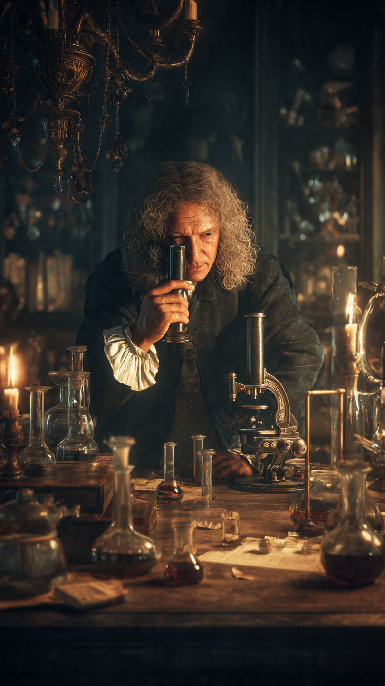
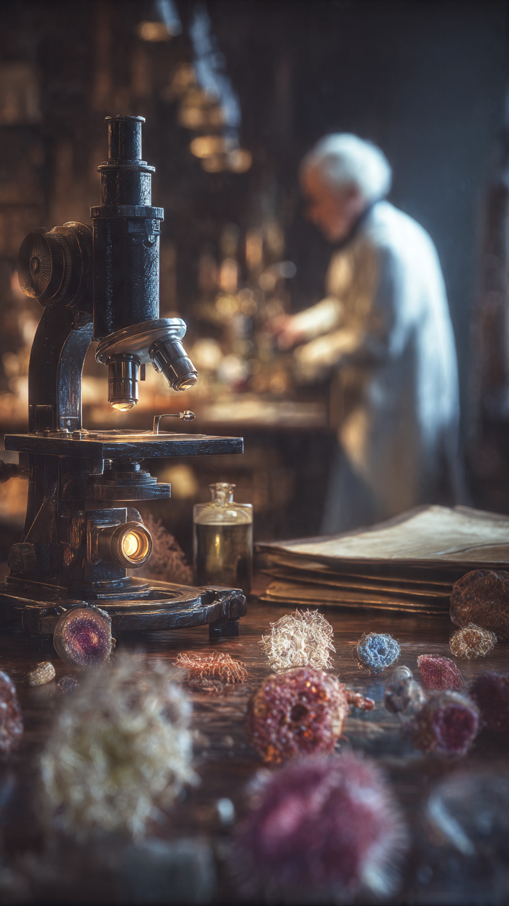

```html
العدسة الصغيرة التي كشفت عالمًا لا يراه البشر | اكتشافات وعلوم
```
في القرن السابع عشر، كان الناس يعتقدون أن ما تراه أعينهم هو كل ما يوجد في العالم.
فإذا لم تستطع رؤيته...
فهو ببساطة غير موجود.
لم يكن أحد يتخيل أن قطرة ماء واحدة قد تخفي بداخلها عالمًا كاملًا يعج بالحياة.
ولم يكن أحد يعلم أن الهواء، والطعام، وحتى جسم الإنسان، تمتلئ بكائنات لا يمكن رؤيتها بالعين المجردة.
في تلك الفترة، عاش رجل هولندي لم يكن طبيبًا.
ولم يكن أستاذًا في جامعة.
بل كان يعمل تاجرًا للأقمشة.
وكان اسمه أنطوني فان ليفينهوك.
كل ما كان يريده في البداية هو فحص جودة الخيوط والأقمشة التي يبيعها.
ولهذا بدأ يصنع عدسات زجاجية صغيرة تكبّر الأشياء أكثر من العدسات العادية.
كان يقضي ساعات طويلة أمام النار، يصهر الزجاج، ويصقله بدقة مذهلة.
وكان كثير من الناس يرونه يضيع وقته في عمل لا فائدة منه.
لكن بالنسبة له...
لم تكن العدسة مجرد قطعة زجاج.
بل كانت نافذة على عالم لا يعرفه أحد.
وبعد مئات المحاولات، نجح في صنع عدسات صغيرة جدًا.
ورغم أن حجمها لم يكن يتجاوز بضعة مليمترات، فإنها كانت تكبّر الأشياء بدرجة لم يصل إليها أي شخص في عصره.
كانت عدساته متفوقة على معظم المجاهر الموجودة آنذاك.
لكنه لم يكن يعلم أن أول نظرة عبرها ستغيّر تاريخ العلم إلى الأبد.
بدأ يضع أمام عدسته كل ما يقع في يده.
شعرة من رأسه.
ورقة نبات.
قطرة من ماء المطر.
وجناح حشرة صغيرة.
وكان في كل مرة يكتشف تفاصيل لم يكن يظن أنها موجودة.
لكن أكثر تجربة أثارت فضوله كانت عندما أخذ قطرة ماء من بركة راكدة بالقرب من منزله.
ووضعها أمام عدسته...
وما رآه بعدها جعله يشك للحظة في عينيه.
📷 الصورة رقم 1

اقترب أنطوني فان ليفينهوك من عدسته أكثر.
وثبّت قطرة الماء الصغيرة بعناية، ثم نظر إليها مرة أخرى.
في البداية، ظن أن الزجاج غير نظيف.
فقد رأى نقاطًا صغيرة تتحرك في كل اتجاه.
مسح العدسة.
وأعاد التجربة.
لكن المشهد لم يتغير.
كانت هناك مخلوقات دقيقة لا تُرى بالعين المجردة، تسبح داخل قطرة الماء وكأنها تعيش في عالم مستقل.
بعضها كان سريع الحركة.
وبعضها يدور حول نفسه.
وأخرى كانت تبدو وكأنها تطارد بعضها البعض.
وقف ليفينهوك مذهولًا.
فقد أدرك أنه أول إنسان يرى هذا العالم الخفي.
لم يكتفِ بماء البركة.
بل بدأ يفحص كل شيء حوله.
ماء الأنهار.
وماء الأمطار.
وقطرات من البحيرات.
ثم انتقل إلى عينات من النباتات والحشرات.
وكان في كل مرة يكتشف أشكالًا جديدة من الكائنات الدقيقة.
عالم كامل...
لم يكن أحد يعلم بوجوده.
لكن أكثر تجاربه إثارة للجدل جاءت عندما قرر فحص طبقة رقيقة من الترسبات الموجودة على أسنانه.
أخذ عينة صغيرة جدًا.
ووضعها تحت عدسته.
ثم نظر...
فكانت المفاجأة أكبر من كل ما رآه من قبل.
وجد آلاف الكائنات الدقيقة تتحرك باستمرار.
كانت تعيش داخل فم الإنسان نفسه.
لم يصدق ما رآه.
فكرر التجربة على أشخاص آخرين.
وفي كل مرة، كانت النتيجة متشابهة.
كان هناك عالم كامل يعيش معنا دون أن نراه.
وعندما كتب ملاحظاته وأرسلها إلى الجمعية الملكية في لندن، استقبل بعض العلماء رسائله بالشك.
كيف يمكن لتاجر أقمشة أن يكتشف شيئًا لم يره كبار علماء أوروبا؟
بل إن بعضهم اعتقد أن هذه المخلوقات مجرد خداع بصري تسببت فيه العدسات.
لكن مع مرور الوقت، أعاد علماء آخرون التجارب باستخدام عدسات مشابهة.
وكانت النتيجة مدهشة.
كل ما وصفه ليفينهوك كان صحيحًا.
لقد فتح بابًا جديدًا في العلم...
بابًا سيغير فهم الإنسان للحياة إلى الأبد.
📷 الصورة رقم 2

بعد أن تأكد العلماء من صحة ملاحظات أنطوني فان ليفينهوك، بدأت نظرة الإنسان إلى العالم تتغير بالكامل.
فقد أدرك الجميع أن الحياة لا تقتصر على ما تراه العين.
بل إن هناك عالمًا كاملًا من الكائنات الدقيقة يعيش حولنا وفي داخلنا، دون أن نشعر بوجوده.
وكان هذا الاكتشاف بداية علم جديد عُرف لاحقًا باسم علم الأحياء الدقيقة.
ورغم أن ليفينهوك لم يكن يعرف وظيفة تلك الكائنات، فإن اكتشافه ألهم علماء جاءوا بعده بعشرات السنين.
وفي القرن التاسع عشر، أثبت لويس باستور أن بعض هذه الكائنات تسبب فساد الطعام، وأن تسخين السوائل بدرجات حرارة معينة يقتلها، وهي العملية التي نعرفها اليوم باسم "البسترة".
وبعد ذلك، أثبت روبرت كوخ أن أنواعًا محددة من البكتيريا هي السبب في أمراض خطيرة كانت تحصد أرواح ملايين البشر.
ومن هنا بدأت الثورة الحقيقية في الطب.
أصبحت المجاهر أكثر تطورًا عامًا بعد عام.
ووصل العلماء إلى رؤية الخلايا، ثم الفيروسات باستخدام المجاهر الإلكترونية، ثم دراسة الحمض النووي الذي يحمل الشفرة الوراثية لكل كائن حي.
كل هذه الإنجازات بدأت من عدسة صغيرة صنعها رجل لم يكن يعمل في جامعة، ولم يحصل على تعليم علمي تقليدي.
ومن المدهش أن ليفينهوك صنع أكثر من خمسمائة عدسة بنفسه.
وكان يحتفظ بطريقة تصنيعها سرًا، حتى إن كثيرًا من العلماء لم يستطيعوا الوصول إلى جودة عدساته إلا بعد سنوات طويلة.
وكان يكتب ملاحظاته بدقة شديدة، ويرسم ما يراه بعناية، وهو ما جعل رسائله تُعد من أهم الوثائق العلمية في تاريخ علم الأحياء.
واليوم، يعتمد الأطباء والعلماء على المجاهر في تشخيص الأمراض، واكتشاف البكتيريا والفيروسات، وتطوير الأدوية واللقاحات، وإجراء الأبحاث التي تنقذ ملايين الأرواح كل عام.
ورغم كل هذا التقدم، لا يزال اسم أنطوني فان ليفينهوك حاضرًا في كتب العلوم باعتباره الرجل الذي فتح أول نافذة حقيقية على العالم الخفي.
وهكذا...
لم يكن أعظم اختراع في قصته آلةً ضخمة، ولا جهازًا معقدًا.
بل كان عدسة صغيرة جدًا.
عدسة غيّرت طريقة رؤية الإنسان للطبيعة، وأثبتت أن أكبر الأسرار قد تكون مختبئة في أصغر الأشياء.
ففي قطرة ماء واحدة...
وجد الإنسان كونًا كاملًا لم يكن يعلم بوجوده.